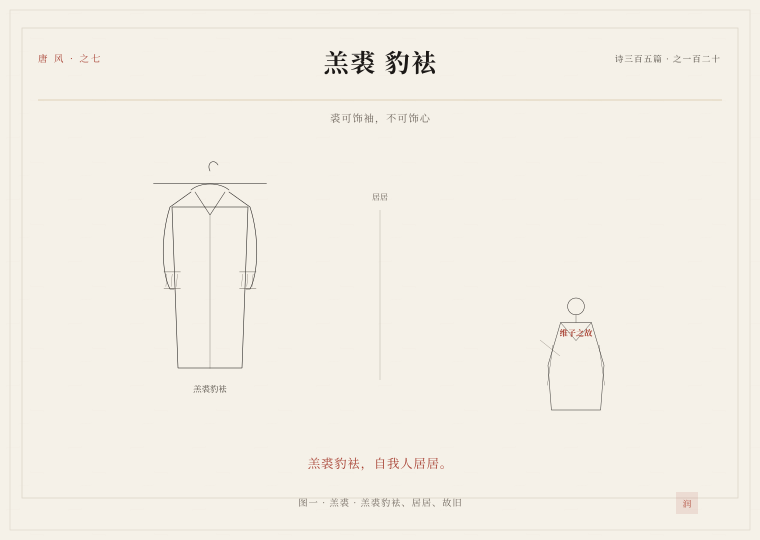
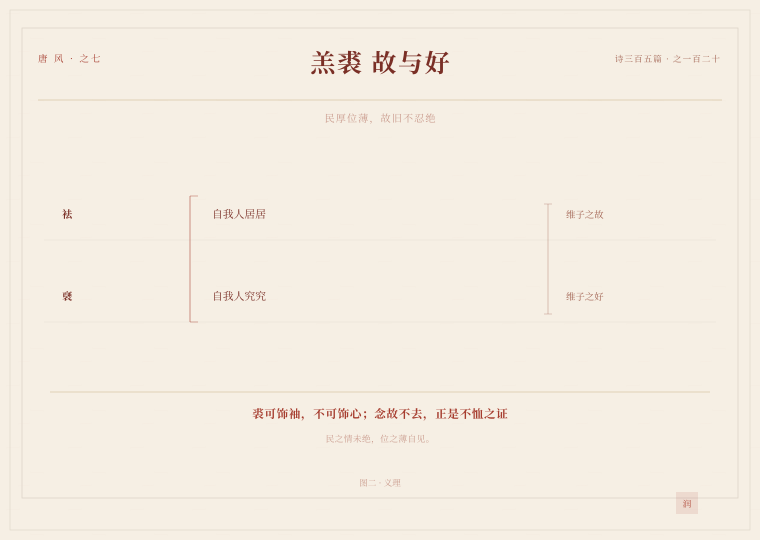

第一百二十篇 羔裘
唐风 · 之七 SJ120
朗读 · 普通话
依经文原文朗读，章次不读出；配古琴底乐，不改速、不加拖腔。全库同一音色（豆包 TTS），非播音员录制。
一 解题
诗三判：
- 谁在说：晋国采邑之民。看见在位者服羔裘、缘豹袖，役使百姓却倨傲不亲；自己岂无他人可往，只因念及故旧恩好，不忍离去。
- 说什么事：二章只换袪/褎、居居/究究、故/好。裘是大夫之服，豹饰在袖；人是在位者，悖恶在民。
- 为何编在此：唐风之七。前六篇多写俭啬、孤立与男女，120
落到“在位不恤其民”。须先辨：此篇与郑风 080《羔裘》同名异篇——080
美古之君子以风朝，三章；120 刺在位不恤民，二章。
《毛序》：“《羔裘》，刺时也。晋人刺其在位不恤其民也。”
朱子《诗集传》：“赋也。羔裘，君纯羔，大夫以豹饰。袪，袂也。居居，未详。……褎，犹袪也。究究，亦未详。……此诗不知所谓，不敢强解。”
本库的看法：《羔裘》是一首把“服”写成“位”的诗。
羔裘豹袪是大夫之服；裘身与豹袖皮本不同，毛传借以喻在位与民异心。诗不说“我苦”，只说“岂无他人，维子之故”——不忍去，是民之厚；不恤，是在位之薄。断语：裘可饰袖，不可饰心；念故不去，正是不恤之证。
先辨五事：“袪”是袖口（袂末），不是“祛病”的祛；“褎”同袖，不是“裒聚”的裒；“自”是由、用（自我人＝对我们、役使我们），不是“自己”；“居居、究究”是怀恶不相亲比之貌，不是“居住”；“故”是故旧，不是“故事”。
二 经文
第一章
羔裘豹袪，自我人居居。
岂无他人？维子之故。
第二章
羔裘豹褎，自我人究究。
岂无他人？维子之好。
分章：二章，章四句。
三 韵读
- 一章：袪、居、故，鱼部；“故”收，故旧不忍绝。
- 二章：褎、究、好，幽部；“好”收，恩好不忍弃。
- 两章“人”字皆不入韵；朱子无叶音改读。
读法：二章由“故”到“好”，韵脚同一指向——民之情未绝，位之薄自见。
四 字义与名物
- 羔裘：小羊之皮为裘，大夫之服。豹袪：袖口缘以豹皮；袪，袂末，袖头。
- 自：由、用；自我人，犹“对我们、役使我们”。居居：怀恶不相亲比之貌（毛传）；朱子以为未详。
- 他人：可归往之他国、他人。维：只。故：故旧。
- 褎：犹袪，袖也。究究：犹居居；《尔雅·释训》“居居、究究，恶也”。好：恩好。
名物：
- 羔裘：大夫朝服之裘；君用纯羔，大夫以豹皮饰袖。
- 豹袪／豹褎：袖缘豹皮，取其武健。《玉藻》“袂可以回肘”：袂为袖之大名，袪为袖头小称，通皆为袂。
五 今译
羔皮裘，豹皮袖，对待我们倨傲不亲。难道没有别人可投？只因念你是故旧。
羔皮裘，豹皮袖，对待我们倨傲难近。难道没有别人可投？只因念你旧恩好。
六 章旨
- 一章：写“袪”与“故”。豹饰在袖，恶色在面；不去，只因故旧。
- 二章：写“褎”与“好”。袖饰犹一章，倨傲更甚一层；不去，只因恩好。
- 总收：民厚而位薄；故旧之情越厚，不恤之刺越明。
七 诗教
- 赋：直陈裘服与人情；赋到“岂无他人”，去志与留念并见。
- 观：观在位者如何服其服而不恤其民；裘愈美，心愈远。
- 群：民与大夫，本有故旧；一朝异心，亲比不成。
- 怨：怨在“居居”“究究”；怨而不去，是唐之遗风，也是诗的分寸。
八 分寸与边界
- 不可与郑风
080《羔裘》混为一篇。彼美古之君子（舍命不渝、邦之司直、邦之彦），此刺在位不恤民；同名不同卷，指认须先看卷次。
- 不可把“居居／究究”当居住、究问。它们是怀恶不亲之貌；一读常义，倨傲就成了状态描写。
- 不可把“自我人”解作“自己的人”。自是由、用；一读自己，役使之意全失。
- 不可把“岂无他人”读作决绝之辞。下接“维子之故”，是留念不是告别；一读决绝，诗就成《硕鼠》之去。
- 不可把此诗读作弃妇或婢妾怨主。毛序系于晋人刺在位；一读男女，大夫之服与采邑之民皆落空。
九 存疑
- 诗旨：毛序“刺时，在位不恤其民”；朱子“此诗不知所谓，不敢强解”。本库从毛序，以故旧之情反衬不恤。
- “居居／究究”：毛传“怀恶不相亲比”；《尔雅》“恶也”；朱子“未详”。从毛传，与郑笺“悖恶之心”合。
- “自”字：毛传引《释诂》“由，用也”；一说“自，从也”。从由、用，见役使。
- “他人”：郑笺“他国可往”；一说“他人”指别家之臣。从他国，与《北风》《硕鼠》去国之旨近。
- 作者身份：郑笺定为“卿大夫采邑之民”；后世或以为婢妾、或以为友人。从采邑之民，故有“故旧”可言。
十 跨典
- 《左传·襄公三十一年》：君子在位，以恤民为责。——在位之常分；此诗正刺其反。
- 《论语·学而》：“君子务本，本立而道生。”——有位者本在恤民；裘饰其末，民怀其本。
- 《诗经·魏风·硕鼠》：“逝将去女，适彼乐土。”——同是民刺在位；彼决去，此留念；一魏一唐，厚薄可见。
- 《诗经·郑风·羔裘》（080）：“彼其之子，舍命不渝。”——同名异篇；彼之服有德，此之服无德。
- 《尔雅·释训》：“居居、究究，恶也。”——二状之训诂本此。
十一 双卡与图
双卡八对：
| 袪（袂末，袖口） |
袪（祛病） |
| 褎（袖） |
褎（裒聚） |
| 自（由、用） |
自（自己） |
| 居居（怀恶不亲） |
居居（居住） |
| 究究（犹居居） |
究究（究问） |
| 故（故旧） |
故（故事） |
| 好（恩好） |
好（好坏） |
| 他人（可往之国／人） |
他人（别人泛称） |

图一 · 羔裘 羔裘豹袪、居居、故旧

图二 · 羔裘 故与好：民厚位薄
读图三处：
- 裘：图一一件羔裘挂衣架，豹皮缘两袖袖口；不画羊身。裘是大夫服，画全羊就成皮货图。
- 袖与民：图一右民者只画衣身，袖与民之间一条淡线相隔；隔线即“不相亲比”。
- “故／好”在图二：两行“袪—故”“褎—好”，左裘饰实、右恩好虚；末格朱线收“念故不去”。